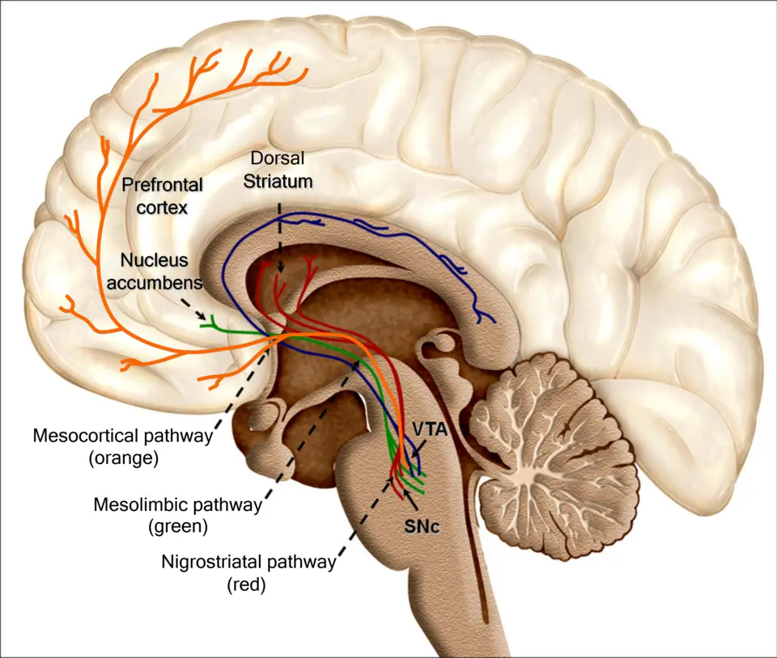

DX.9 — Dystonie palpébrale médicamenteuse 🚩 E3
Un médicament qui bloque les récepteurs dopaminergiques peut fermer les paupières de force en quelques heuresS4. Cette dystonie aiguë cède en quelques minutes sous anticholinergique, mais elle peut gagner le larynx et asphyxier le patientS1. Le médecin vérifie donc d’abord la voix, la respiration et la déglutition, puis il cherche le médicament causal dans l’ordonnance et l’automédicationS1.
1. Définition
Le consensus de la Société internationale de Parkinson et des mouvements anormaux, révisé en 2025, définit la dystonie comme un trouble du mouvementS3. Ce trouble produit des mouvements ou des postures anormaux, soutenus ou intermittents, habituellement stéréotypés et répétitifsS3. Aux paupières, la dystonie prend la forme de spasmes brefs et phasiques, sans torsion visible : on parle alors de blépharospasmeS3. La dystonie palpébrale médicamenteuse est un blépharospasme dont la cause acquise, sur l’axe étiologique de ce consensus, est un médicamentS3. Elle est aiguë lorsqu’elle survient en heures ou en jours, subaiguë lorsqu’elle s’installe en jours ou en semaines, et tardive après des mois ou des années d’expositionS4.
2. Épidémiologie (Suisse, puis Europe)
La Revue Médicale Suisse indique une dystonie aiguë chez jusqu’à 60 % des patients sous neuroleptique conventionnel, contre 2 à 3 % sous atypiqueS1. L’information professionnelle (AIPS) d’Haldol® indique des troubles extrapyramidaux très fréquents sous halopéridol, à 34 %S8. L’AIPS de Paspertin® range la dystonie aiguë du métoclopramide, crise oculogyre comprise, parmi les effets fréquents, entre 1 sur 100 et 1 sur 10S7. Les chiffres clés, les groupes à risque et l’évolution individuelle expliquent le rang 🚩 E3 de ce diagnostic.
Chiffres clés, de la Suisse vers l’Europe
Le tableau rassemble les seules fréquences lues ; chacune porte sur une population précise, qu’il ne faut pas généraliser.
| Chiffre | Population | Année | Source |
|---|---|---|---|
| Dystonie aiguë jusqu’à 60 % | Patients sous neuroleptique conventionnel, comme l’halopéridol | 2018 | S1 |
| Dystonie aiguë de 2 à 3 % | Patients sous clozapine, olanzapine ou quétiapine | 2018 | S1 |
| Troubles extrapyramidaux 34 % | Patients des études contrôlées sous halopéridol | 2024 | S8 |
| Dystonie médicamenteuse de 1 à 10 % | Patients sous certains antiémétiques antidopaminergiques | 2025 | S4 |
| Dystonie de 0,01 à 0,1 % ou moins | Patients sous inhibiteur sélectif de la recapture de la sérotonine, valproate, carbamazépine ou lamotrigine | 2025 | S4 |
| Blépharospasme chez 15 patients sur 72, soit 20,8 % | Patients suivis pour un syndrome tardif | 2026 | S5 |
La sous-déclaration et les erreurs de diagnostic empêchent de connaître le taux réel de dystonie sous la plupart des médicaments non antipsychotiquesS4.
Qui est touché
La réaction dystonique aiguë frappe surtout l’homme jeune, l’adolescent ou l’enfant, récemment traité par de fortes doses de neuroleptique pour une psychose nouvelleS1. Sous métoclopramide, l’AIPS signale le même terrain : l’enfant et l’adulte jeune, ou la forte doseS7. La revue européenne ajoute que la polymédication augmente le risque, et qu’une seule faible dose suffit chez l’enfantS4.
La forme tardive concerne au contraire le traitement prolongé, notamment chez le patient âgé sous métoclopramideS7. Dans une série de syndromes tardifs, le blépharospasme débutait plus tôt que le blépharospasme idiopathiqueS5. Les inhibiteurs puissants du cytochrome CYP2D6, comme la fluoxétine ou la paroxétine, augmentent l’exposition au métoclopramide et le risque extrapyramidalS7.
Histoire naturelle, mortalité et enjeu de santé publique
Sous métoclopramide, la dystonie apparaît typiquement dans les 24 à 48 heures qui suivent la première priseS4. Les mouvements évoluent par vagues et peuvent s’aggraver durant la journée suivante, jusqu’à imposer une consultation aux urgencesS1. Sous traitement adapté, la réaction cède en général en quelques heures ou en quelques joursS4.
L’évolution est presque toujours favorable sous anticholinergique ou après l’arrêt du neuroleptiqueS1. Une dystonie laryngée par adduction des cordes vocales peut toutefois provoquer une asphyxie mortelle, ce qui fait de la rapidité du traitement une exigenceS1. Le syndrome malin des neuroleptiques, très rare sous métoclopramide, peut aussi tuerS7.
La dyskinésie tardive constitue l’enjeu de long terme, car elle peut devenir irréversible chez certains patientsS8. En Suisse, chaque professionnel de santé doit déclarer un effet indésirable grave ou nouveau par le portail ElViS de SwissmedicS6.
3. Physiopathologie
Dans le striatum, le système cholinergique excite et le système dopaminergique inhibe : leur équilibre règle la motricité involontaireS6. Un antagoniste des récepteurs D2 coupe ce frein dopaminergique dans les faisceaux nigrostriés, et la balance penche vers l’excès cholinergiqueS6S8. Les noyaux gris centraux libèrent alors des contractions involontaires du muscle orbiculaire, qui ferment les paupièresS2S3. Ce modèle explique pourquoi un anticholinergique central comme le bipéridène lève la crise en quelques minutesS6S1.
La base à connaître montre la voie nigrostriée sur un schéma réel. La cascade en quatre temps et le tableau de corrélation relient chaque perturbation à l’examen qui la montre et au traitement qui la corrige.
Base à connaître : trois voies dopaminergiques, une seule motrice
L’halopéridol supprime le délire en bloquant la voie mésolimbique, mais le même blocage dans les faisceaux nigrostriés produit dystonie, akathisie et parkinsonismeS8. Son effet sur les cellules lactotropes de l’antéhypophyse élève la prolactine, et son effet sur la zone gâchette chémoréceptrice explique son action antiémétiqueS8. Un même antagoniste D2 agit donc sur plusieurs voies, et le symptôme dépend de la voie atteinte.
L’AIPS d’Haldol® situe entre 60 % et 80 % l’occupation des récepteurs D2 qui traite la psychose en limitant les symptômes extrapyramidauxS8. Au-delà, la marge motrice se réduit, ce qui explique le surcroît d’effets extrapyramidaux au-dessus de 10 mg par jourS8.
Voie nigrostriée : la cible motrice du blocage D2. Ce schéma montre une coupe sagittale médiane de l’encéphale

Lisez d'abord seul ce cliché (voie nigrostriée : la cible motrice du blocage d2) : cherchez vous-même le signe.
La copie annotée (voie nigrostriée : la cible motrice du blocage d2) numérote les repères décrits ci-dessous.
- La substance noire compacte (SNc) contient les neurones dopaminergiques qui projettent vers le striatum.
- Le striatum dorsal reçoit la voie nigrostriée en rouge ; un antagoniste D2 y lève le frein dopaminergique.
- Le noyau accumbens reçoit la voie mésolimbique en vert ; son blocage porte l’effet antipsychotique recherché.
- La voie nigrostriée est rouge, alors que la voie mésolimbique verte porte l’effet thérapeutique du neuroleptique.
- Le schéma ne montre pas le noyau du nerf facial, qui exécute la fermeture palpébrale sur ordre des ganglions de la base.
Ce que l'image décide. Le médecin relie toute fermeture palpébrale récente à un blocage D2 nigrostrié tant que l’ordonnance n’est pas vérifiée.

Le muscle orbiculaire de l’œil ferme la paupière, tandis que le releveur de la paupière supérieure l’ouvre ; une toxine qui diffuse vers le releveur provoque donc un ptosisS9. La fermeture dystonique est active : la paupière ne tombe pas, elle est serrée par l’orbiculaire, ce qui la distingue d’un ptosis.
Amorce, développement, installation, maintien
Amorce : une introduction, une augmentation de dose ou un changement de neuroleptique déclenche la réaction, parfois dès une dose uniqueS1. Le métoclopramide peut aussi la provoquer après une seule administrationS7.
Développement : le blocage dopaminergique, la facilitation ou le déséquilibre entre dopamine, sérotonine, noradrénaline et acétylcholine dans les noyaux gris centraux sous-tendent les mouvements médicamenteuxS2. Ce mécanisme explique aussi les dystonies sous antidépresseur ou antiépileptique, qui n’ont rien d’un neuroleptiqueS2S4.
Installation : la dystonie médicamenteuse siège le plus souvent à la tête et au couS4. Elle s’étend volontiers des yeux à la bouche, au cou, au tronc et aux pieds, comme dans le cas genevois d’un patient sous aripiprazoleS1.
Maintien : tant que le médicament agit, le spasme peut revenir quelques heures après une dose d’anticholinergique efficaceS4. Après une exposition prolongée, une dyskinésie tardive peut persister malgré l’arrêt, et une hausse de dose peut la masquerS8.
Perturbation → exploration → thérapeutique (mécanisme)
Chaque ligne relie un maillon de la cascade au geste qui le révèle et au traitement qui le corrige.
| Perturbation | Exploration | Thérapeutique (mécanisme) |
|---|---|---|
| Blocage D2 nigrostrié par un médicament récent | Anamnèse médicamenteuse datée, automédication comprise | Arrêt immédiat du métoclopramide ou du neuroleptique, qui lève le blocageS7 |
| Excès cholinergique relatif dans le striatum | Réponse du spasme à l’anticholinergique, observée en minutes | Bipéridène, qui bloque les récepteurs centraux de l’acétylcholineS6 |
| Contraction de l’orbiculaire de l’œil | Inspection de la fente palpébrale et du clignement | Toxine botulique A dans l’orbiculaire, si la forme persisteS9 |
| Extension aux muscles laryngés | Voix, stridor, effort respiratoire | Anticholinergique intraveineux sans délai et protection des voies aériennesS1 |
| Hyperthermie, rigidité et instabilité végétative | Température, créatine phosphokinase (CPK) | Arrêt du médicament, refroidissement, dantrolène ou bromocriptine, apport liquidienS7 |
| Adaptation tardive après exposition prolongée | Évolution après réduction ou arrêt du médicament | Pas d’anticholinergique systématique, car il peut aggraver les dyskinésies tardivesS6 |
4. Démarche diagnostique
Devant un blépharospasme, le médecin écarte d’abord la kératite aiguë (DX.6, rang E1) puis le corps étranger cornéen ou l’abrasion cornéenne (DX.5, rang E2), car ils menacent l’œil. La dystonie médicamenteuse vient ensuite au rang E3, parce qu’une extension laryngée peut asphyxier et qu’un syndrome malin peut tuerS1S7. Le médecin la sépare enfin du blépharospasme essentiel (DX.8), de la crise oculogyre et des diagnostics qui l’imitentS4.
Ce qui tranche, le piège et la conduite
Une dystonie médicamenteuse peut être prise pour une crise d’épilepsie partielle, une encéphalite, un tétanos, une hystérie ou une attaque de paniqueS4. Dans la dystonie laryngée, cette erreur peut coûter la vieS4.
| Diagnostic | Élément qui tranche | Piège | Conduite si positif |
|---|---|---|---|
| Syndrome malin des neuroleptiques | Hyperthermie, rigidité, instabilité végétative, CPK élevéeS7 | La dystonie initiale masque la fièvre qui débute | Arrêt du médicament et réanimationS7 |
| Kératite ou corps étranger (DX.6, DX.5) | Douleur, rougeur, test à la fluorescéine positif | Le spasme réflexe d’un œil douloureux ressemble à une dystonie | Avis ophtalmologique selon le DX concerné |
| Blépharospasme essentiel (DX.8) | Absence de médicament causal ; apraxie d’ouverture possible, absente de la forme tardiveS5 | Le geste antagoniste ne sépare pas les deux formes de façon significativeS5 | Toxine botulique en centre spécialisé |
| Forme tardive | Exposition prolongée, dyskinésies oro-bucco-linguales, stéréotypies des membresS5 | Une hausse de dose du neuroleptique masque le syndromeS8 | Révision du traitement avec le psychiatre |
| Crise d’épilepsie partielle, encéphalite | Trouble de conscience, signe focal, fièvre | La déviation du regard évoque à tort une crise oculogyre | Bilan neurologique urgent |
5. Anamnèse ciblée et drapeaux rouges
L’interrogatoire commence par les médicaments, car le patient oublie ou cache parfois la molécule causaleS1. Il caractérise ensuite la fermeture des paupières, la déviation du regard, la gêne de la gorge et de la voix et la douleur. Les questions médicamenteuses datent l’exposition, et chaque drapeau rouge impose une action immédiate. Les classes médicamenteuses en cause dépassent largement les neuroleptiquesS4.
Fermeture involontaire des paupières
Le siège est palpébral, souvent dans une dystonie crânienne plus large qui touche aussi la bouche et le couS1. Le spasme ferme les paupières de force, sans paralysie ; il survient en vagues fluctuantes, qui s’aggravent parfois durant le jour suivantS1.
Le début typique suit de quelques heures ou de quelques jours une prise nouvelle ou une hausse de doseS4S1. Le tableau devient atypique lorsque le spasme est strictement unilatéral, ce qui oriente vers le spasme hémifacial (DX.7). Il l’est aussi lorsqu’il dure depuis des années sans médicament suspect, ce qui oriente vers le blépharospasme essentiel.
Un geste antagoniste, comme toucher la paupière, s’observe plus souvent dans la forme idiopathique, sans différence significative avec la forme tardiveS5. Ce signe n’écarte donc jamais la cause médicamenteuse.
Déviation du regard
Le patient décrit des tiraillements récurrents et incontrôlables des yeux vers le haut, puis un clignement forcé des paupièresS1. Cette crise oculogyre appartient à la même dystonie aiguë, et l’AIPS du métoclopramide la rattache aux troubles extrapyramidauxS7.
Le symptôme est typique lorsqu’il s’associe à une dystonie de la bouche ou du cou après une exposition récente. Il devient atypique avec un trouble de conscience, qui oriente vers une crise épileptiqueS4.
Gêne de la gorge, de la voix et du souffle
Le patient du cas genevois était dysarthrique et légèrement dyspnéique à son arrivée aux urgencesS1. Une sensation de souffle court accompagnait déjà la torsion du cou et l’ouverture forcée de la boucheS1.
Ce symptôme signale une possible dystonie laryngée, qui ferme les cordes vocales et peut asphyxierS1. Il n’est jamais banal, même lorsque le patient semble surtout anxieux.
Douleur et inconfort
La torsion du cou, des épaules et des pieds devient très douloureuse et laisse le patient dans un inconfort extrêmeS1. Cette douleur musculaire est typique et suit le rythme des spasmes.
Une douleur oculaire profonde avec vision floue n’appartient pas à la dystonie : elle oriente vers la cornée ou vers un glaucome à angle ferméS6. Elle impose un examen de l’œil avant toute injection d’anticholinergique.
Questions médicamenteuses et leur raison
| Question | Raison physiopathologique |
|---|---|
| Quel médicament a été introduit, augmenté ou changé ces derniers jours ? | La réaction suit une introduction, une hausse de dose ou un changement de neuroleptiqueS1 |
| Avez-vous reçu une injection contre les nausées, aux urgences ou après une opération ? | Une dose unique de métoclopramide ou de dropéridol suffitS1S7 |
| Prenez-vous un remède pour le sommeil, le côlon irritable ou l’anxiété ? | Deanxit® contient du flupentixol et Dogmatil® du sulpiride, deux neuroleptiques cachésS1 |
| Prenez-vous un antidépresseur, du lithium ou un antiépileptique ? | Ces classes provoquent aussi des dystonies, la lamotrigine plutôt après trois semainesS4S1 |
| Prenez-vous de la fluoxétine ou de la paroxétine avec le métoclopramide ? | Ces inhibiteurs du CYP2D6 augmentent l’exposition au métoclopramideS7 |
| Avez-vous arrêté brutalement un neuroleptique pris depuis longtemps ? | Le sevrage brutal peut déclencher une dystonie généralisée, réversible à la repriseS1 |
| Avez-vous déjà fait une réaction semblable ? | Un antécédent de dyskinésie tardive contre-indique le métoclopramideS7 |
Classes médicamenteuses en cause
Les antipsychotiques restent la première cause, mais la revue européenne de 2025 recense de nombreuses autres classesS4. Le tableau indique pour chacune le délai et la forme décrits.
| Classe ou molécule | Délai et forme | Remarque utile |
|---|---|---|
| Neuroleptique conventionnel (halopéridol, flupentixol, sulpiride) | Heures à jours ; dystonie crânio-cervicale, crise oculogyreS1 | Le risque est maximal chez l’homme jeune à forte doseS1 |
| Neuroleptique atypique (aripiprazole, olanzapine, quétiapine) | Heures à jours, plus rarementS1 | Le cas genevois est survenu trois jours après l’aripiprazoleS1 |
| Métoclopramide, dropéridol | Dans les 24 à 48 heures pour le métoclopramideS4 | Une dose unique suffit chez l’enfant et l’adulte jeuneS7 |
| Ondansétron | Toutes les formes de dystonie sont décritesS4 | Un antiémétique non antidopaminergique peut donc aussi en provoquer |
| Prométhazine | Dystonie aiguë, parfois sévère en surdosageS4 | Le risque paraît supérieur à celui du métoclopramideS4 |
| Lamotrigine | Subaiguë, après plus de trois semaines ; blépharospasme, crise oculogyreS4 | Le délai long trompe l’interrogatoire |
| Carbamazépine, phénytoïne | Surtout subaiguë, à dose thérapeutique ou toxiqueS4 | L’association carbamazépine et lithium favorise la crise oculogyreS4 |
| Lithium | Variable ; 22 cas de dystonie sur 436 troubles du mouvement recensésS4 | Le blépharospasme figure parmi les formes décritesS4 |
| Antidépresseurs de toutes classes | RareS1S4 | Les inhibiteurs du CYP2D6 majorent aussi le risque du métoclopramideS7 |
La polymédication augmente le risque de dystonie, et la sous-déclaration masque probablement de nombreux casS4.
Drapeaux rouges : signification et action immédiate
| Drapeau rouge | Signification | Action immédiate |
|---|---|---|
| Stridor, voix étouffée, dyspnée | Dystonie laryngée, risque d’asphyxieS1 | Anticholinergique intraveineux lent et appel à l’aide pour les voies aériennes |
| Fièvre, rigidité, sueurs, tension instable | Syndrome malin des neuroleptiquesS7 | Arrêt du médicament, refroidissement, dosage des CPK, soins intensifs |
| Œil rouge et douloureux, vision floue, pupille dilatée | Glaucome à angle fermé, contre-indication au bipéridèneS6 | Mesure de la pression intraoculaire et avis ophtalmologique |
| Déficit focal ou trouble de conscience | Cause neurologique autre qu’un effet médicamenteuxS1 | Imagerie cérébrale et avis neurologique |
| Nourrisson exposé au métoclopramide | Âge où le métoclopramide est contre-indiquéS7 | Arrêt définitif et surveillance pédiatrique |
6. Examen physique ciblé, région par région
L’examen commence par ce qui tue : le médecin prend les fonctions vitales et la température avec le tonus. Il observe ensuite les paupières, examine les yeux et regarde la bouche et la mâchoire. Il termine par le cou, le tronc et les membres, puis par un examen neurologique qui cherche un signe focal.
Fonctions vitales, voix et déglutition
Signe : le médecin recherche une dysarthrie, une dyspnée et un stridor, qui traduisent une atteinte pharyngo-laryngéeS1. Geste : il fait parler le patient, écoute la respiration au cou et observe la déglutition de la salive. Aspect : la voix normale est claire ; une voix étouffée avec tirage signe une obstruction en cours.
Le pouls et la pression artérielle sont mesurés avant l’injection, car le bipéridène parentéral peut faire baisser la pression et accélérer le cœurS6.
Température et tonus des membres
Signe : une hyperthermie avec rigidité et instabilité végétative oriente vers un syndrome malinS7. Geste : le médecin mesure la température, mobilise passivement le coude et le genou et note la sudation. Aspect : la dystonie aiguë laisse le patient afébrile, comme dans le cas genevoisS1.
Le piège consiste à attribuer la rigidité à la seule dystonie, alors que la fièvre naissante change tout le pronostic.
Paupières
Signe : le médecin cherche un clignement forcé, bilatéral, par spasmes brefs de l’orbiculaireS1S3. Geste : il observe le patient au repos, lui demande d’ouvrir grand les yeux et compte les fermetures pendant la conversation. Aspect : les sourcils descendent et la peau périorbitaire se plisse, ce qui prouve une fermeture active.
Une paupière qui tombe sans plis évoque au contraire un ptosis par atteinte du releveurS9. Une difficulté à rouvrir sans contraction visible oriente vers l’apraxie de l’ouverture des paupières (DX.10).
Yeux : cornée, pupilles, regard
Cornée : le médecin éclaire la cornée et cherche une rougeur ou une lésion, qui ferait d’un spasme réflexe une kératite ou un corps étranger. Pupilles : il compare leur taille, car une mydriase avec œil dur après anticholinergique évoque un glaucome aiguS6.
Regard : il note une déviation conjuguée et soutenue des yeux vers le haut, qui signe une crise oculogyreS1. Le patient ne peut pas ramener le regard au centre sur commande pendant la crise.
Bouche, mâchoire et langue
Signe : une grimace avec ouverture involontaire et extrême de la bouche traduit une dystonie oro-buccale aiguëS1. Geste : le médecin fait ouvrir et fermer la bouche, fait tirer la langue, puis il observe la langue au repos.
Aspect tardif : des mouvements rythmiques de la langue, des lèvres et des mâchoires signent plutôt une dyskinésie tardiveS8. Ces dyskinésies oro-bucco-linguales soutiennent fortement l’origine tardive d’un blépharospasmeS5.
Cou, tronc et membres
Signe : le médecin cherche un torticolis, un rétrocolis ou une torsion du tronc et des piedsS1. Geste : il observe la tête de face et de profil, puis le patient debout. Aspect : la posture tordue fluctue en vagues et fait mal, ce qui la sépare d’une contracture fixe.
Des stéréotypies des membres ou du tronc associées au blépharospasme orientent vers un syndrome tardifS5. Une impossibilité de rester assis traduit plutôt une akathisie, qui partage le même mécanismeS8.
Examen neurologique
Signe : le médecin recherche un déficit focal, un trouble de conscience ou un mouvement strictement unilatéral. Geste : il teste la force, les réflexes et la sensibilité des quatre membres, puis la marche. Aspect : en l’absence de signe focal, avec des mouvements fluctuants, l’origine médicamenteuse devient l’hypothèse principaleS1.
Un parkinsonisme, avec lenteur et rigidité, signale une autre réaction extrapyramidale du même blocage, qui modifie le choix du traitementS1.
7. Approche syndromique
Le blocage dopaminergique produit cinq syndromes distincts, qui peuvent coexister chez le même patientS1S2. Chacun sépare les signes fonctionnels, rapportés par le patient, des signes physiques, constatés par le médecin.
7.1 Dystonie aiguë crânio-cervicale
Le patient se plaint d’yeux qui se ferment, de mâchoires qui s’ouvrent et d’un cou qui se tord, avec douleurS1. L’examen montre un blépharospasme, une dystonie oro-buccale et un torticolis ou un rétrocolisS1. Le mécanisme est l’excès cholinergique relatif du striatum, que corrige l’anticholinergiqueS6.
7.2 Crise oculogyre
Le patient sent ses yeux tirés vers le haut, par crises récurrentesS1. Le médecin constate une déviation tonique et conjuguée du regard, souvent associée au clignement forcéS1.
Crise oculogyre
La crise oculogyre est une dystonie aiguë des muscles oculomoteurs, qui fixe les deux yeux vers le hautS4S1. Le médecin la recherche en demandant au patient de regarder droit devant lui, ce qu’il ne parvient pas à faire. Elle répond très bien au bipéridène, comme les crampes musculaires de même origineS6.
7.3 Blépharospasme tardif
Le patient sous neuroleptique depuis des mois décrit des fermetures répétées, souvent avec un besoin de bougerS5. L’examen montre un blépharospasme avec dyskinésies oro-bucco-linguales, dystonie faciale, stéréotypies et akathisieS5. Le mécanisme repose sur une adaptation après exposition prolongée, que l’anticholinergique peut aggraverS6S8.
7.4 Syndrome malin des neuroleptiques
Le patient présente confusion et sueurs, puis le médecin constate hyperthermie, symptômes extrapyramidaux, instabilité végétative et CPK élevéeS7. Ce syndrome survient avec le métoclopramide seul ou associé à un neuroleptiqueS7.
7.5 Akathisie et parkinsonisme médicamenteux
Le patient de l’akathisie ne tient pas en place, tandis que celui du parkinsonisme ralentit et se raiditS1. Ces réactions subaiguës s’installent en jours ou en semaines, plus lentement que la dystonie aiguëS1.
Akathisie
L’akathisie est un besoin impérieux de bouger, qui empêche de rester assis et que le patient décrit comme une agitation intérieure. Le médecin l’observe en laissant le patient assis quelques minutes : il croise, décroise les jambes et se lève. L’AIPS d’Haldol® la mentionne parmi les effets extrapyramidaux nés de l’action sur les noyaux gris centrauxS8.
| Syndrome | Signes fonctionnels | Signes physiques |
|---|---|---|
| 7.1 Dystonie aiguë crânio-cervicale | Yeux fermés de force, mâchoire ouverte, cou tordu, douleur | Blépharospasme, dystonie oro-buccale, torticolis ou rétrocolis |
| 7.2 Crise oculogyre | Yeux tirés vers le haut, par crises | Déviation tonique conjuguée du regard |
| 7.3 Blépharospasme tardif | Fermetures répétées après des mois de traitement, besoin de bouger | Dyskinésies oro-bucco-linguales, stéréotypies, akathisie |
| 7.4 Syndrome malin | Confusion, sueurs | Hyperthermie, rigidité, instabilité végétative, CPK élevée |
| 7.5 Akathisie et parkinsonisme | Agitation intérieure, lenteur | Piétinement, rigidité, bradykinésie |
8. Diagnostic positif et critères
Le consensus international ne fixe pas de critères propres à la forme médicamenteuse, qu’il range parmi les causes acquisesS3. Le diagnostic repose sur trois arguments décrits par l’unité des mouvements anormaux des Hôpitaux universitaires de GenèveS2. Il exige un lien temporel net entre le médicament et le spasme, un effet de la dose et une disparition complète à l’arrêt, sauf dans les formes tardivesS2. Le tableau des critères précise ce qui suffit et ce qui ne suffit pas, et l’orientation vers une forme tardive repose sur d’autres signes.
Critères d’imputabilité
| Critère | Ce qui suffit | Ce qui ne suffit pas |
|---|---|---|
| Phénoménologie | Spasmes palpébraux bilatéraux dans une dystonie crânio-cervicale fluctuanteS1 | Une fermeture d’un seul œil, qui oriente vers le spasme hémifacial |
| Lien temporel | Début en heures ou en jours après une prise ou une hausse de doseS4 | La simple présence d’un médicament sur l’ordonnance |
| Effet de la dose | Aggravation à la hausse, amélioration à la baisseS2 | Une dose habituelle, qui n’exclut rien chez l’enfantS4 |
| Réponse au traitement | Disparition sous bipéridène en quelques minutesS1 | Une réponse partielle, qui impose de revoir le diagnostic |
| Évolution | Disparition complète après arrêt du médicament causalS2 | Une persistance, qui oriente vers une forme tardiveS1 |
Signes qui orientent vers une forme tardive
Une série de 72 patients atteints de syndromes tardifs a comparé leur blépharospasme à 37 blépharospasmes idiopathiquesS5. Les stéréotypies des membres ou du tronc et la dyskinésie oro-bucco-linguale avaient la meilleure précision pour l’origine tardiveS5. L’apraxie de l’ouverture des paupières n’apparaissait que dans la forme idiopathiqueS5. La sévérité mesurée par l’échelle de Jankovic ne différait pas entre les deux groupesS5.
9. Examens complémentaires
9.a Le gold standard reste clinique : le médecin associe la phénoménologie, l’anamnèse médicamenteuse et la réponse au bipéridèneS1. Aucun cliché ne montre cette dystonie, et une forme typique ne justifie aucune imagerie.
9.b En première intention, le médecin dose les CPK si la fièvre ou la rigidité font craindre un syndrome malinS7.
9.c Avant de garder ou de reprendre un antidopaminergique, il enregistre un électrocardiogramme (ECG) et contrôle la kaliémieS8. Devant un œil douloureux ou un glaucome connu, il demande une mesure de la pression intraoculaireS6.
9.d En deuxième intention, une imagerie cérébrale s’impose devant un signe focal ou un mouvement strictement unilatéralS1. Le tableau d’interprétation résume la conduite selon chaque résultat.
Réponse au bipéridène
Valeur : dans le cas genevois, une injection intraveineuse lente de 5 mg de bipéridène a fait disparaître tous les mouvements en dix minutesS1S6. Interprétation : une disparition complète confirme le mécanisme cholinergique et soutient fortement l’origine médicamenteuseS1. Piège : une réponse nulle impose de chercher une autre cause, et une récidive dans les heures n’infirme pas le diagnosticS4.
Créatine phosphokinase (CPK)
Indication : le dosage cherche une souffrance musculaire lorsque fièvre, rigidité ou instabilité végétative accompagnent les mouvementsS7. Interprétation : des CPK normales, comme dans le cas genevois, soutiennent une dystonie aiguë simpleS1. Des CPK élevées avec hyperthermie font retenir un syndrome malin et arrêter immédiatement le médicamentS7. Piège : les spasmes eux-mêmes peuvent élever un peu les CPK : le chiffre se lit avec la température et le tonus.
Électrocardiogramme et intervalle QTc
Indication : l’AIPS d’Haldol® recommande un ECG initial avant l’halopéridol, et un enregistrement continu en cas d’administration intraveineuseS8. Le métoclopramide intraveineux expose aussi à l’allongement du QT, à la bradycardie sévère et à l’arrêt cardiaqueS7.
Seuil : si le QTc dépasse 500 ms, l’halopéridol doit être interrompuS8. Piège : l’association de deux médicaments allongeant le QT est contre-indiquée avec l’halopéridolS8.
Kaliémie
Indication : une hypokaliémie non corrigée contre-indique l’halopéridol, car elle favorise l’allongement du QTc et les arythmies ventriculairesS8. Interprétation : le médecin corrige toute hypokaliémie avant de reprendre le neuroleptique. Piège : le métoclopramide exige lui aussi de la prudence en cas de trouble électrolytique non corrigéS7.
Pression intraoculaire
Indication : le glaucome à angle étroit contre-indique le bipéridène, et l’AIPS demande un contrôle régulier de la pression intraoculaire sous traitementS6. Interprétation : une pression élevée avec douleur et mydriase impose l’avis ophtalmologique et un autre traitement de la dystonie. Piège : la mydriase peut provenir de l’anticholinergique lui-même, qui peut déclencher un glaucome à angle étroitS6.
Imagerie cérébrale
Indication : un mouvement anormal unilatéral ou un signe focal fait demander un scanner cérébral, puis une imagerie par résonance magnétique (IRM)S1. Interprétation : chez une patiente genevoise, l’IRM a montré un hypersignal T1 lenticulaire lié à un diabète décompensé, et non un effet médicamenteuxS1. Piège : une forme bilatérale typique, sans signe focal, ne justifie pas d’imagerie.
Résultat, signification, conduite
| Résultat | Signification | Conduite |
|---|---|---|
| Disparition du spasme sous bipéridène | Dystonie aiguë médicamenteuseS1 | Arrêt du médicament causal et surveillance de la récidiveS4 |
| CPK élevées et température supérieure à la normale | Syndrome malin des neuroleptiquesS7 | Arrêt, refroidissement, dantrolène ou bromocriptineS7 |
| QTc supérieur à 500 ms | Risque d’arythmie ventriculaireS8 | Arrêt de l’halopéridolS8 |
| Hypokaliémie | Hypokaliémie qui allonge le QTc | Correction avant tout neuroleptiqueS8 |
| Pression intraoculaire élevée | Glaucome à angle ferméS6 | Pas de bipéridène, avis ophtalmologique urgent |
| Lésion sur l’imagerie | Cause structurelle ou métaboliqueS1 | Traitement de la cause |
10. Arbre décisionnel
L’arbre suit l’ordre de gravité ; chaque nœud renvoie à un signe, à un examen ou à une action.
- Si le patient présente un stridor, une voix étouffée ou une dyspnée, alors le médecin injecte le bipéridène et protège les voies aériennes (urgence)S1.
- Si la fièvre et la rigidité dominent, alors il retient un syndrome malin, arrête le médicament et dose les CPKS7.
- Si l’œil est rouge et douloureux, alors il examine la cornée et la pression intraoculaire avant tout anticholinergiqueS6.
- Si la cornée est atteinte, alors il suit la conduite de la kératite (DX.6) ou du corps étranger (DX.5).
- Si un médicament antidopaminergique a été pris récemment, alors il retient une dystonie aiguë et administre le bipéridèneS1.
- Si le spasme cède après le bipéridène, alors il arrête le médicament causal et surveille la récidiveS7S4.
- Si le spasme résiste au bipéridène, alors il revoit le diagnostic et cherche un signe focalS1.
- Si l’exposition dure depuis des mois avec des dyskinésies oro-bucco-linguales, alors il retient une forme tardive et confie la révision du traitement au psychiatreS5S8.
- Si aucun médicament n’est en cause, alors il oriente vers le blépharospasme essentiel (DX.8) ou l’apraxie d’ouverture (DX.10).
11. Prise en charge selon les recommandations suisses
11.A But. Le traitement vise la levée complète du spasme après une ou deux doses de bipéridène espacées de 30 minutes, puis l’absence de récidiveS6S4. Il vise aussi l’arrêt définitif de l’exposition qui l’a provoquéS7.
11.B Moyens. La conduite chronologique d’urgence commence par les voies aériennes, puis par l’anticholinergique et l’arrêt du médicament causalS1S7. L’adulte reçoit le bipéridène, et l’AIPS du métoclopramide propose une benzodiazépine chez l’enfantS7. Le métoclopramide et l’halopéridol sont les causes les mieux documentées. La forme tardive relève de la toxine botulique A ; la tétrabénazine n’y est pas autorisée en SuisseS9S10.
Les situations spéciales modifient ce schéma chez l’enfant, la femme enceinte, la femme qui allaite et le patient âgé. Le volet social précise la conduite automobile, la déclaration et la transmission de l’information.
Urgence — conduite chronologique
| Délai | Geste | Raison et délai maximal |
|---|---|---|
| Minute 0 | Écouter la voix, chercher un stridor, mesurer pouls, pression et température | La dystonie laryngée peut asphyxier ; la fièvre oriente vers un syndrome malinS1S7 |
| Minutes 0 à 5 | Vérifier l’absence de glaucome à angle étroit, puis injecter le bipéridène chez l’adulte : 2,5–5 mg par voie intramusculaire ou intraveineuse lenteS6 | Le geste ne souffre aucun délai en cas de gêne respiratoireS1 |
| Minutes 0 à 5, enfant | Injecter 1 mg jusqu’à 1 an, 2 mg jusqu’à 6 ans, 3 mg jusqu’à 10 ans, par voie intramusculaire ou intraveineuse lenteS6 | L’AIPS du métoclopramide propose aussi une benzodiazépine chez l’enfantS7 |
| Minute 10 | Réévaluer le spasme, la voix et la pression artérielle | Les mouvements ont disparu en dix minutes dans le cas genevois ; la pression peut baisser après l’injectionS1S6 |
| Minute 30 | Répéter la même dose si le spasme persisteS6 | La dose journalière maximale de l’adulte reste de 10–20 mgS6 |
| Première heure | Arrêter le médicament causal et l’inscrire au dossier | L’arrêt immédiat est la règle devant tout symptôme extrapyramidalS7 |
| Heures suivantes | Surveiller la récidive et redonner l’anticholinergique, parfois pendant plusieurs jours | Le spasme peut revenir quelques heures après la première doseS4 |
| Dans les 24 heures | Choisir avec le psychiatre un antipsychotique de remplacement si l’indication persiste | La quétiapine a remplacé l’aripiprazole sans récidive dans le cas genevoisS1 |
Le transfert en soins intensifs est nécessaire devant une atteinte respiratoire persistante, une hyperthermie ou une instabilité végétativeS1S7. Le piège qui fait perdre du temps consiste à attribuer le tableau à l’anxiété, alors que la réaction est douloureuse et réelleS4.
Bipéridène — Akineton® (solution injectable 5 mg/ml, n° 24035 ; comprimés 2 mg, n° 24036 ; retard 4 mg, n° 54937)S6
| Classe | Anticholinergique central (code ATC N04AA02) ; il se lie de façon réversible aux récepteurs de l’acétylcholine et n’a qu’un faible effet périphériqueS6 |
|---|---|
| Indication | Troubles extrapyramidaux dus aux neuroleptiques ou à des médicaments d’action similaire ; dystonies, blépharospasme et syndrome de MeigeS6 |
| Dose AIPS adulte | Injection de 2,5–5 mg par voie intramusculaire ou intraveineuse lente, répétée après 30 minutes au besoin, sans dépasser 10–20 mg par jourS6. Par voie orale, l’adulte prend 1–4 mg une à quatre fois par jour avec le neuroleptiqueS6 |
| Dose AIPS enfant | Injection de 1 mg jusqu’à 1 an, de 2 mg jusqu’à 6 ans et de 3 mg jusqu’à 10 ans, renouvelable après 30 minutesS6. Dès 3 ans, l’enfant peut prendre 1–2 mg une à trois fois par jour en comprimésS6 |
| Pharmacocinétique | Pic plasmatique en 1 heure par voie orale ; demi-vie de 24,3 heures après un bolus intraveineux ; biodisponibilité orale de 33 %S6 |
| Contre-indications | Hypersensibilité, glaucome à angle étroit, sténose mécanique digestive, mégacôlon et iléusS6 |
| Précautions | Tachycardie, tendance convulsive, adénome prostatique, résidu vésical et troubles mentaux organiques ; contrôle régulier de la pression intraoculaireS6 |
| Grossesse et allaitement | L’emploi pendant la grossesse demande de la prudence, faute d’étude contrôlée ; le bipéridène passe dans le lait, et l’AIPS déconseille son emploi chez la femme qui allaiteS6 |
| Effets à annoncer | Bouche sèche, nausées, baisse de la pression après injection, confusion à forte dose, rétention urinaire ; baisse de la vigilance au volantS6 |
| Interactions | Il additionne ses effets aux autres anticholinergiques et à l’alcool ; il peut aggraver les dyskinésies tardives dues aux neuroleptiquesS6 |
Métoclopramide — Paspertin® (comprimés et ampoules 10 mg, gouttes, n° 32733)S7
| Classe | Antiémétique antidopaminergique, substrat et inhibiteur du CYP2D6S7S4 |
|---|---|
| Indication | Nausées et vomissements de l’adulte, y compris ceux de la migraine aiguë ; chez l’enfant dès 1 an, seulement en deuxième intention par voie intraveineuseS7 |
| Dose AIPS adulte | Dose unitaire de 10 mg jusqu’à trois fois par jour, sans dépasser 30 mg ou 0,5 mg/kg par jourS7. La durée maximale est de 5 jours, avec au moins 6 heures entre deux prisesS7 |
| Dose AIPS enfant | Par voie intraveineuse, l’enfant reçoit 0,1 à 0,15 mg/kg jusqu’à trois fois par jour, sans dépasser 0,5 mg/kg par jourS7 |
| Ajustements | La dose baisse de 50 % si la clairance de la créatinine vaut 15 à 60 ml/min, et de 75 % si elle est d’au plus 15 ml/minS7 |
| Contre-indications | Antécédent de dyskinésie tardive, maladie de Parkinson, épilepsie, association à la lévodopa, phéochromocytome, occlusion digestive, enfant de moins de 1 anS7 |
| Grossesse et allaitement | L’emploi exige une indication stricte et s’évite en fin de grossesse, à cause du risque extrapyramidal néonatal ; l’allaitement n’est pas recommandéS7 |
| Effet dystonique | La dystonie survient surtout chez l’enfant et l’adulte jeune, parfois après une seule dose ; l’arrêt immédiat s’imposeS7 |
| Interactions | Les neuroleptiques renforcent les spasmes de la tête, du cou et des épaules ; la fluoxétine et la paroxétine augmentent son expositionS7 |
Halopéridol — Haldol® (comprimés, gouttes 2 mg/ml, solution injectable 5 mg/ml, n° 26891)S8
| Classe | Butyrophénone, puissant antagoniste central des récepteurs D2, sans activité anticholinergiqueS8 |
|---|---|
| Indication | Schizophrénie, trouble schizo-affectif, épisode maniaque, délire après échec des mesures non médicamenteuses, agitation psychotique aiguëS8 |
| Dose AIPS | Dans la schizophrénie, l’adulte reçoit 2 à 10 mg/jour par voie orale, avec un maximum de 20 mg/jourS8. Au-delà de 10 mg/jour, l’efficacité ne croît pas, mais les symptômes extrapyramidaux augmententS8 |
| Contre-indications | Syndrome parkinsonien, démence à corps de Lewy, QTc long connu, hypokaliémie non corrigée, association à un médicament allongeant le QTS8 |
| Grossesse et allaitement | Une exposition au troisième trimestre expose le nouveau-né à des symptômes extrapyramidaux ou de sevrage ; l’halopéridol passe dans le lait, et le bénéfice de l’allaitement se pèseS8 |
| Correcteur | L’AIPS réserve l’anticholinergique au besoin, sans prévention systématique, et le prolonge après l’arrêt si son élimination est plus rapideS8 |
Toxine botulique de type A — BOTOX® (n° 52433)S9
| Indication | Traitement symptomatique du blépharospasme et des dystonies focales associées, chez le patient de plus de 12 ansS9 |
|---|---|
| Dose AIPS | La dose initiale vaut 1,25 à 2,5 unités par point dans les parties prétarsales de l’orbiculaire, sans dépasser 25 unités par œilS9. Le blépharospasme ne reçoit pas plus de 100 unités toutes les 12 semainesS9 |
| Délai d’action | L’effet apparaît en trois jours, culmine en une à deux semaines et dure environ 3 moisS9 |
| Contre-indications | Hypersensibilité à la toxine ou à un excipient, infection au point d’injectionS9 |
| Grossesse et allaitement | Elle ne s’emploie pas pendant la grossesse, sauf nécessité absolue, ni chez la femme sans contraception ; l’allaitement n’est pas recommandéS9 |
| Effets à annoncer | Ptosis chez 11 % des patients, kératite ponctuée, lagophtalmie, sécheresse oculaire et diplopieS9 |
| Précaution | Le clignement réduit expose la cornée ; l’injection médiale de la paupière inférieure s’évite pour limiter l’ectropion et la diplopieS9 |
Tétrabénazine — Xenazine® (comprimés 25 mg, n° 58375)S10
| Indication suisse | Mouvements hyperkinétiques de la maladie de Huntington seulement ; la dyskinésie tardive ne figure pas dans l’AIPSS10 |
|---|---|
| Mécanisme | Elle inhibe de façon réversible le transporteur vésiculaire VMAT2, ce qui réduit le stockage présynaptique des monoaminesS10 |
| Contre-indications | Dépression, syndrome parkinsonien, insuffisance hépatique modérée ou sévère, allaitement, inhibiteur de la monoamine oxydase ou réserpineS10 |
| Grossesse et allaitement | L’allaitement figure parmi les contre-indications de l’AIPSS10 |
| Risques | Elle peut provoquer dépression, parkinsonisme, syndrome malin et léger allongement du QTcS10 |
| Interaction utile | Associée à un neuroleptique ou au métoclopramide, elle expose à une déplétion dopaminergique marquéeS10 |
Son emploi dans une forme tardive se fait donc hors autorisation, par un neurologue spécialisé, et la dose ne s’enseigne pas iciS10.
Situations spéciales
Enfant : l’enfant reçoit une dose de bipéridène fixée par l’âge, et la forme retard ne lui est pas destinéeS6. Le métoclopramide est contre-indiqué avant 1 an, en raison du risque extrapyramidal accruS7.
Grossesse : le bipéridène s’emploie avec prudence, et le métoclopramide s’évite en fin de grossesse, car le nouveau-né peut présenter un syndrome extrapyramidalS6S7.
Allaitement : le bipéridène passe dans le lait à des concentrations proches du plasma, et l’AIPS déconseille son emploiS6.
Sujet âgé : la biodisponibilité du bipéridène augmente avec l’âge, et sa demi-vie orale atteint 23,8 à 36,6 heuresS6. Le patient âgé risque surtout la dyskinésie tardive sous métoclopramide prolongéS7.
Insuffisance rénale ou hépatique : l’AIPS ne décrit aucune expérience du bipéridène dans ces situationsS6. La dose de métoclopramide baisse de moitié dans l’insuffisance hépatique sévèreS7.
Volet social et réglementaire
Le bipéridène diminue la capacité de réaction, et le métoclopramide peut gêner la vision et la conduite par ses dystoniesS6S7. Le médecin déconseille donc la conduite jusqu’à la disparition des symptômes et la fin du traitement correcteur.
Le médecin déclare la réaction par le portail ElViS de Swissmedic lorsqu’elle est grave ou nouvelleS6. Il remet au patient une trace écrite du médicament, de la dose et de la réaction, et il informe le prescripteur.
11.C Surveillance. Après l’injection, le médecin surveille le spasme, la voix, la pression artérielle, l’état mental et la mictionS6. Le spasme peut revenir quelques heures plus tard, ce qui justifie une nouvelle dose ou quelques jours de traitementS4. Le métoclopramide doit être arrêté dès les premiers signes de dyskinésie de la langue ou des doigtsS7.
11.D Pronostic et sortie. L’évolution est favorable sous anticholinergique ou après l’arrêt du médicament, mais une persistance rare annonce un syndrome tardifS1. Le patient sort lorsque cinq critères de sortie sont réunis.
Critères de guérison et de sortie
- Le spasme palpébral et les autres mouvements anormaux ont disparu.
- La voix, la respiration et la déglutition sont redevenues normales.
- La pression artérielle, la température et l’état mental sont stables après l’injection.
- Le médicament causal est arrêté, et un traitement de remplacement est décidé avec le prescripteur.
- Le patient connaît les signes de récidive et dispose d’une trace écrite de la réaction.
12. Prévention
Primaire : le métoclopramide se limite à 5 jours et à 30 mg par jour chez l’adulte, avec 6 heures entre deux prisesS7. L’halopéridol garde la dose efficace la plus basse, car au-delà de 10 mg par jour les effets extrapyramidaux augmentent sans gainS8. Le médecin recherche aussi les neuroleptiques cachés dans les remèdes contre l’anxiété ou le côlon irritableS1.
Secondaire : l’AIPS d’Haldol® n’accepte pas d’anticholinergique préventif en routine ; il se prescrit seulement au besoinS8. Le patient apprend à reconnaître un clignement forcé, des yeux qui montent ou une gorge qui serre, et à consulter sans attendre.
Tertiaire : le dossier signale la réaction, et un antécédent de dyskinésie tardive interdit ensuite le métoclopramideS7. Le médecin réévalue régulièrement l’anticholinergique, qu’il ne poursuit pas sans raison, et organise le suivi des formes tardivesS6S8.
13. Points clés
- Une fermeture forcée des paupières dans les jours qui suivent un antiémétique ou un neuroleptique est une dystonie aiguë jusqu’à preuve du contraireS1S4.
- La voix et la respiration s’examinent avant tout, car une dystonie laryngée peut asphyxierS1.
- L’adulte reçoit 2,5–5 mg de bipéridène par voie intramusculaire ou intraveineuse lente, répétés après 30 minutes au besoinS6.
- Le glaucome à angle étroit contre-indique le bipéridène, et l’anticholinergique peut aggraver une dyskinésie tardiveS6.
- Le métoclopramide ne dépasse jamais 5 jours, et il est contre-indiqué avant 1 anS7.
14. Pièges et questions fréquentes à l’examen fédéral suisse
| Question | Bonne réponse | Raison |
|---|---|---|
| Un homme de 19 ans ferme les yeux de force deux jours après du métoclopramide : quel est le diagnostic ? | Une dystonie aiguë médicamenteuse. | Le terrain jeune et le délai de 24 à 48 heures sont typiques (point 2)S4S7 |
| Quel examen précède toute injection chez ce patient ? | L’écoute de la voix et de la respiration. | Une dystonie laryngée peut asphyxier (point 5)S1 |
| Quelle est la dose de bipéridène chez un enfant de 4 ans ? | 2 mg par voie intramusculaire ou intraveineuse lenteS6. | L’AIPS fixe la dose par l’âge (point 11)S6 |
| La dose unique de bipéridène se confond-elle avec le maximum journalier ? | Non : 2,5–5 mg par dose, 10–20 mg par jourS6. | Les deux valeurs de l’AIPS n’ont pas la même fonction (point 11)S6 |
| Un patient sous anticholinergique a un œil rouge, dur et douloureux : que craindre ? | Un glaucome à angle fermé. | Le bipéridène peut le déclencher et le contre-indique (point 9)S6 |
| Faut-il donner du bipéridène dans un blépharospasme tardif avec dyskinésies buccales ? | Non, pas systématiquement. | Il peut aggraver les dyskinésies tardives (point 7)S6 |
| Fièvre, rigidité et CPK élevées sous métoclopramide : quelle conduite ? | Arrêt immédiat, refroidissement, dantrolène ou bromocriptine. | Le syndrome malin menace la vie (point 7)S7 |
| Un geste antagoniste exclut-il une cause médicamenteuse ? | Non. | Il ne sépare pas de façon significative les formes tardive et idiopathique (point 8)S5 |
Sources
Toutes les sources ont été consultées le 11.11.2026 (Europe/Zurich).
- [S1] Burkhard PR, Horvath J, Fleury V, Zacharia A, Bally JF, Bereau M, Bouthour W, Lüscher C, Krack P (Hôpitaux universitaires de Genève, HUG). Mouvements anormaux aux urgences. Revue Médicale Suisse 2018;14:888-91. https://archive-ouverte.unige.ch/unige:123502
- [S2] Burkhard PR (Unité des troubles du mouvement, HUG, Genève). Acute and subacute drug-induced movement disorders (résumé). Parkinsonism & Related Disorders 2014;20 Suppl 1:S108-12. doi:10.1016/S1353-8020(13)70027-0. https://pubmed.ncbi.nlm.nih.gov/24262159/
- [S3] Albanese A, Bhatia KP, Fung VSC, et al. Definition and Classification of Dystonia. Movement Disorders 2025;40(7):1248-59. doi:10.1002/mds.30220. https://pmc.ncbi.nlm.nih.gov/articles/PMC12273609/
- [S4] Catthoor K, Detraux J, De Hert M (Anvers, Louvain). The epidemiology and phenomenology of non-antipsychotic-induced dystonia: a hybrid systematic-narrative review. European Psychiatry 2025;68(1):e36. doi:10.1192/j.eurpsy.2025.18. https://pmc.ncbi.nlm.nih.gov/articles/PMC11883798/
- [S5] Baizabal-Carvallo JF, Jankovic J. Tardive blepharospasm (résumé). Journal of Neurology 2026;273(9). doi:10.1007/s00415-026-14038-y. https://pubmed.ncbi.nlm.nih.gov/42572102/
- [S6] Swissmedic, information professionnelle (AIPS) Akineton®/- retard (bipéridène), n° 24035, 24036, 54937, Laboratorio Farmaceutico S.I.T., mise à jour mai 2022. https://files.refdata.ch/simis-public-prod/MedicinalDocuments/ca5967db8afc43e59a26069f7ac30bea-fr.html
- [S7] Swissmedic, AIPS Paspertin® (métoclopramide), n° 32733, Viatris Pharma GmbH, mise à jour janvier 2020. https://files.refdata.ch/simis-public-prod/MedicinalDocuments/16af4d992d9a4ce1b09aa46296ef6cdb-fr.html
- [S8] Swissmedic, AIPS Haldol® (halopéridol), n° 26891, mise à jour novembre 2024. https://files.refdata.ch/simis-public-prod/MedicinalDocuments/d9759cb5a7a04ac39e0e5f6cbe6244e7-fr.html
- [S9] Swissmedic, AIPS BOTOX® (toxine botulique de type A), n° 52433, mise à jour mai 2025. https://files.refdata.ch/simis-public-prod/MedicinalDocuments/75f72abdf6e44efc8ee93062464a1618-fr.html
- [S10] Swissmedic, AIPS Xenazine® (tétrabénazine), n° 58375, mise à jour février 2025. https://files.refdata.ch/simis-public-prod/MedicinalDocuments/00a0cfa737424d94b434d2b40e21dfbf-fr.html